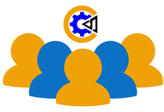

Somos Code Over System, una empresa de informática dedicada a
brindar servicios personalizados, confiables y accesibles, que solucionen las
necesidades
tecnológicas de individuos y empresas. Con un enfoque centrado en la calidad y atención
al cliente, nos esforzamos por ofrecer servicios
ágiles y eficientes que se adapten a los requerimientos específicos del cliente.